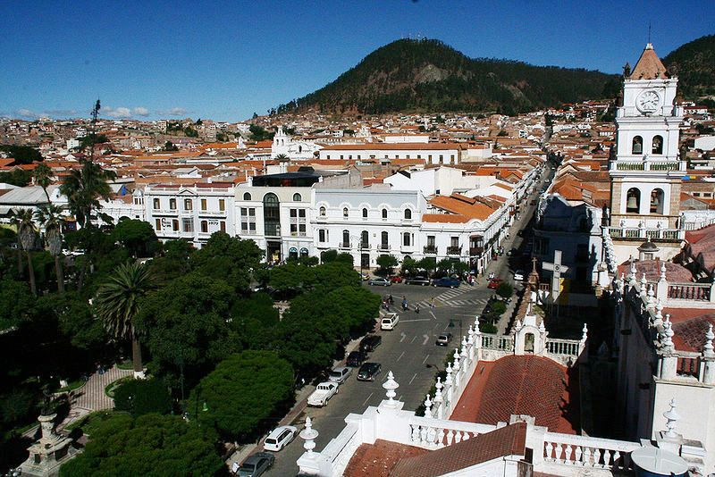

MI CIUDAD
SUCRE
Mi ciudad hermosa:
Sucre es la capital Constitucional de Bolivia.
Sucre se encuentra al centro de Bolivia y comunicada por medio de buses con las principales ciudades del Pais
Fue conocida como Charcas, la Plata, Chuquisaca. Por sus mezclas de construcciones coloniales y arquitectura republicana.
Y fue declarada como Patrimonio de la Humanidad por la Unesco.
Es la cuna de la Indepemdencia de Bolivia, por consiguiente son muchos los museos y edificios históricos,
pueden conocer, existe varios lugares Turisticos donde uno puedee ir a pasar con la familia y ver los lugares ,maravillosos que existe en nuestra ciudad
